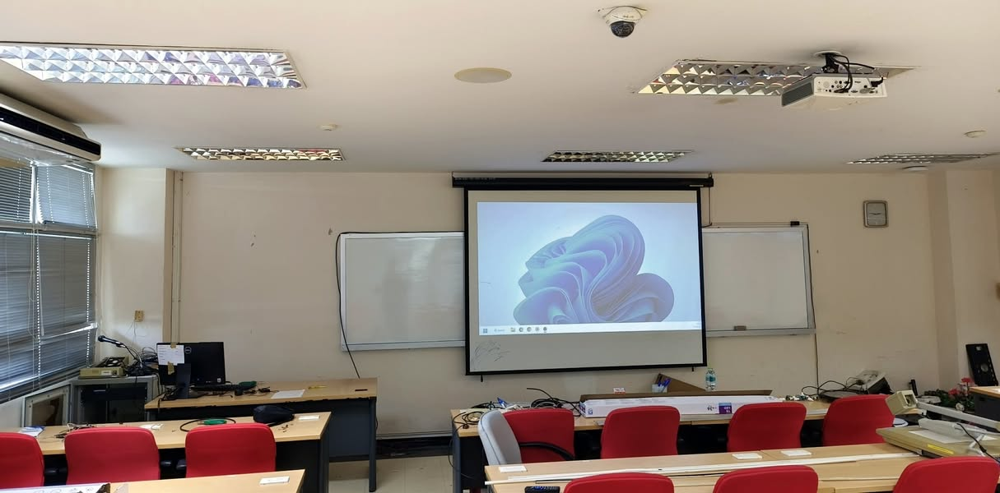

ห้องเรียนกำลังจะเปลี่ยน แล้ววิธีเรียนของเราล่ะ
{kind=link}

หลายองค์กรกำลังจัดทำแผน AI ปรับหลักสูตร พัฒนาระบบงาน และยกระดับทักษะคน ทิศทางนี้ดูสมเหตุสมผล แต่สิ่งที่น่ากังวลคือบางคนยังเชื่อว่าการเปลี่ยนแปลงครั้งนี้คงไม่กระทบอะไรมาก เพราะเคยได้ยินคำเตือนเรื่องคอมพิวเตอร์ อินเทอร์เน็ต digital transformation และ big data มาแล้วหลายรอบ
สำหรับมหาวิทยาลัย การเติมวิชา AI สองวิชา หรือแจกเครื่องมือหลายโมเดล อาจทำให้เห็นการเคลื่อนไหว แต่ยังไม่ตอบว่า การเรียนรู้และความสามารถของคนต้องเปลี่ยนอย่างไร
คำว่า “เก่ง” กำลังเปลี่ยนความหมาย
สาขาอย่างวิศวกรรมคอมพิวเตอร์ วิศวกรรมซอฟต์แวร์ และงานที่เกี่ยวกับความรู้มีแนวโน้มเผชิญการเปลี่ยนแปลงสูง คนที่มีความสามารถโดดเด่นหรือปรับตัวเร็วจะยังมีโอกาส แต่คนที่ยังไม่มีจุดยืนหรือคุณค่าที่ชัดเจนอาจลำบากขึ้น
การอยู่ในกลุ่ม “top” ไม่จำเป็นต้องหมายถึงคะแนนสูงที่สุดหรือเก่งที่สุดในห้อง แต่หมายถึงการเป็นหนึ่งในคนแรก ๆ ที่ผู้อื่นนึกถึงเมื่อมีปัญหาสำคัญให้ช่วยแก้ ความลึกเฉพาะทางยังจำเป็น เพียงแต่ความลึกนั้นต้องเชื่อมกับการคิด การสร้าง และความรับผิดชอบในสถานการณ์จริง
อย่าเริ่มจาก “ใช้ AI” ให้เริ่มจาก “เข้าใจวิธีคิด”
ถ้าหลักสูตรกำหนดเพียงว่าปีหนึ่งใช้เครื่องมืออะไร ปีสองเพิ่มเครื่องมือใด และปีสามเข้าถึงโมเดลอะไร ผู้เรียนอาจมีเครื่องมือจำนวนมาก แต่ไม่มีความรู้พอจะตรวจคำตอบ ไม่มีหลักในการตั้งคำถาม และไม่รู้ว่าการตัดสินใจใดไม่ควรยกให้เครื่อง
คนที่เราต้องการยังต้องคิดอย่างมีหลัก ตั้งคำถามได้ดี มีความรู้พอจะวินิจฉัยว่า AI ผิดหรือถูก และรับผิดชอบต่อผลของการตัดสินใจ Persona หรือภาพของคนที่ต้องการสร้างจึงควรมาก่อนรายการเทคโนโลยี
กรอบภาพผู้เรียนจากเอเชียชี้ไปที่ความเป็นมนุษย์
จากการทบทวนแนวทางหลักสูตรของหลายประเทศในเอเชีย ผมสรุปภาพผู้เรียนระดับประถมอย่างง่ายเพื่อใช้คิดต่อ โดยไม่ใช่ชื่อ Persona ทางการเพียงคำเดียวของแต่ละประเทศ:
จีน — Young Innovator: กล้าสร้าง กล้าทดลอง แก้ปัญหา และมองเทคโนโลยีเป็นส่วนหนึ่งของการพัฒนาประเทศ
ญี่ปุ่น — Human-centered Problem Solver: สังเกตปัญหารอบตัว คิดเป็นระบบ คำนึงถึงผู้อื่น และมองหาวิธีทำให้สังคมดีขึ้น
เกาหลี — Adaptive Lifelong Learner: เรียนรู้ด้วยตนเอง ปรับตัว พัฒนาต่อเนื่อง และอยู่กับการเปลี่ยนแปลงได้
สิงคโปร์ — Responsible Critical Thinker: คิดและตรวจสอบได้ ตัดสินใจด้วยเหตุผล รับผิดชอบต่อสิ่งที่ทำ และพร้อมเรียนรู้ตลอดชีวิต
ถ้อยคำเหล่านี้แทบไม่ต้องมีคำว่า AI เพราะเป้าหมายที่แท้จริงไม่ใช่การสร้างผู้ใช้เครื่องมือ แต่คือการสร้างคนที่ดำรงความสามารถและความรับผิดชอบได้ในโลกที่มี AI แล้วประเทศไทยอยากให้เด็กของเราเติบโตเป็นคนแบบใด?
เมื่อความรู้หาได้ง่าย การเรียนรู้ต้องจริงกว่าเดิม
ความรู้จำนวนมากเข้าถึงได้ง่าย และเครื่องมือซื้อหรือสมัครใช้ได้ แต่ความสามารถในการคิดไม่ได้เกิดขึ้นเพียงเพราะมีสิทธิใช้ AI การเรียนรู้ด้วยตนเองต้องเกิดขึ้นจริง การวัดผลสัมฤทธิ์ต้องบอกได้ว่าผู้เรียนทำอะไรได้ การสนทนากับคนเก่งยังจำเป็นต่อการสร้างวิธีคิด และโจทย์จริงต้องเข้ามาเป็นพื้นที่ฝึกใช้ความรู้ภายใต้ข้อจำกัด
บทบาทของครูและอาจารย์จึงไม่ควรหยุดที่การถ่ายทอดเนื้อหา แต่ต้องออกแบบประสบการณ์ ตั้งโจทย์ ให้ข้อเสนอแนะ ท้าทายเหตุผล และช่วยให้ผู้เรียนเห็นมาตรฐานของงานที่ดี
ห้องบรรยายอาจไม่ใช่แกนหลักอีกต่อไป
เนื้อหาที่เคยต้องรับฟังในห้องใหญ่สามารถเรียนออนไลน์ได้มากขึ้น เวลาที่คนมาอยู่ร่วมกันจึงควรถูกใช้กับสิ่งที่ทำคนเดียวได้ยากกว่า เช่น การอภิปราย การวิจารณ์งาน การทดลอง การทำโครงการ การแก้ปัญหาร่วมกัน และการรับคำแนะนำเฉพาะบุคคล
การปรับปรุงห้องเรียนมีความหมายเมื่อสัมพันธ์กับกิจกรรมการเรียนรู้ หากเพียงเปลี่ยนสถานที่แต่ยังคงบรรยายทางเดียวตลอดชั่วโมง เราอาจได้ห้องใหม่โดยไม่เกิดวิธีเรียนใหม่
การสอบต้องวัดความสามารถในโลกจริง
ถ้าการประเมินเหลือเพียงการปิดคอมพิวเตอร์ ห้ามใช้ AI และวัดว่าผู้เรียนทำข้อสอบเดิมได้หรือไม่ เราอาจกำลังวัดความสามารถในการอยู่รอดจากข้อสอบ มากกว่าความสามารถในการทำงานในโลกที่ผู้คนเข้าถึง AI ได้
การประเมินใหม่ไม่จำเป็นต้องอนุญาต AI ทุกครั้ง แต่ควรแยกให้ชัดว่าเมื่อใดต้องวัดพื้นฐานโดยไม่ใช้เครื่องมือ เมื่อใดต้องวัดการใช้เครื่องมืออย่างมีวิจารณญาณ และเมื่อใดต้องวัดผลลัพธ์ กระบวนการ หลักฐาน และความรับผิดชอบจากงานจริง
มหาวิทยาลัยต้องออกแบบใหม่ทั้งระบบ
AI กำลังทำให้คำถามเรื่องหลักสูตร ห้องเรียน บทบาทอาจารย์ และการสอบเชื่อมกันมากขึ้น การแก้เพียงส่วนเดียวไม่พอ เพราะหากเป้าหมายบอกให้คิด แต่การสอนยังให้จำ และการสอบยังให้ทำซ้ำ ระบบก็จะดึงทุกคนกลับไปสู่วิธีเดิม
คำถามที่อาจารย์และผู้บริหารต้องช่วยกันตอบจึงไม่ใช่เพียง “จะสอน AI อะไร” แต่คือมหาวิทยาลัยต่อจากนี้จะมีหน้าตาอย่างไร และจะสร้างคนที่ยังคิดเป็น เรียนรู้เป็น และรับผิดชอบเป็น ในโลกที่เครื่องมือเก่งขึ้นทุกวันได้อย่างไร